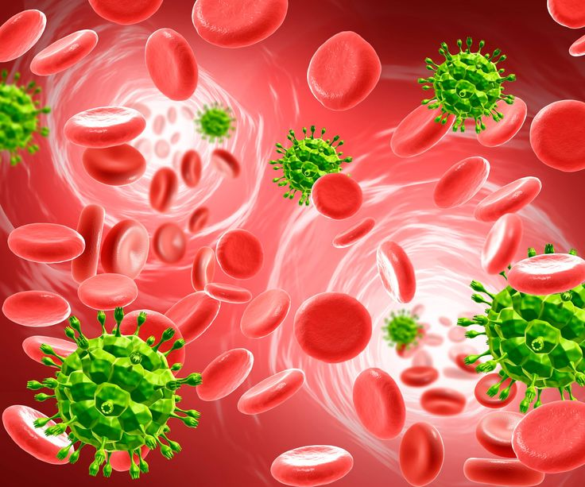
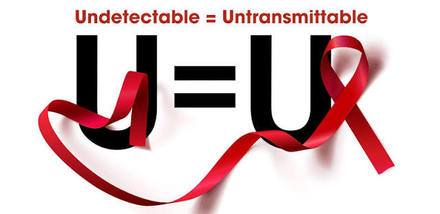
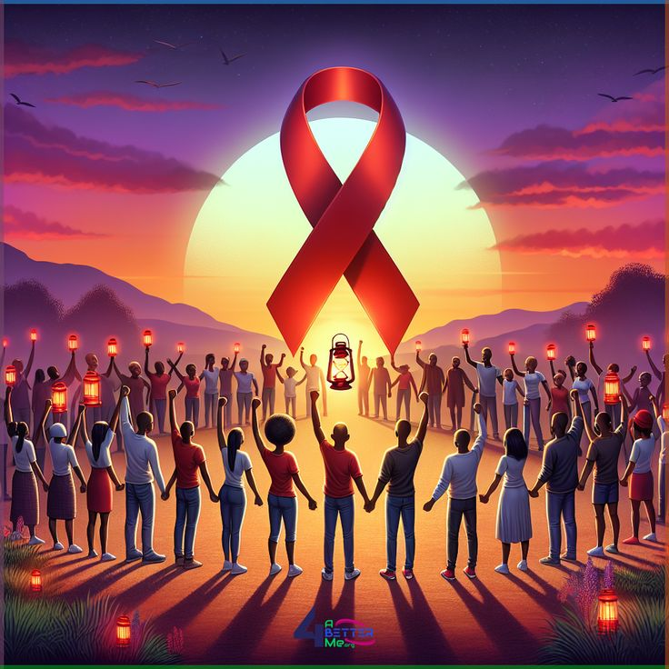

01
Strengthens the Immune System
Effective ART allows the immune system to recover and helps the body fight infections and other illnesses.
Learn more →Learn about HIV and AIDS, prevention, treatment, and support resources.
Taking HIV treatment as prescribed helps control the virus, protect the immune system and maintain good health.
Consistent use of antiretroviral therapy (ART) helps people living with HIV stay healthy and achieve viral suppression.
Effective ART allows the immune system to recover and helps the body fight infections and other illnesses.
Learn more →
Consistent ART can stop HIV from multiplying and reduce the amount of virus in the blood to an undetectable level.
Understand viral load →Consistent treatment helps prevent HIV from progressing to advanced HIV disease and reduces HIV-related illness and death.
Learn more →
A person living with HIV who is taking ART and maintains an undetectable viral load has zero risk of sexually transmitting HIV to their sexual partners.
Explore U = U →Poor adherence can allow HIV to multiply while exposed to medication, increasing the risk of developing drug resistance.
Learn about resistance →Effective HIV treatment enables people living with HIV to live healthy, productive lives and maintain their daily activities.
Learn more →Appropriate ART during pregnancy and breastfeeding is an important part of preventing HIV transmission to the baby.
Learn more →Different people experience different barriers to staying on HIV treatment. Understanding the barrier is the first step toward finding a solution.
Medication reminders should never reveal someone's HIV status.
Instead of: "Take your HIV medication"
Use: "Medication reminder"
Long-acting injectable ART, such as cabotegravir plus rilpivirine (CAB/RPV), can reduce the need for daily oral medication for eligible patients.
Injectable treatment may help people who find it difficult to remember daily tablets.
Injectable ART does not remove the need for clinic appointments and does not automatically solve transport problems, stigma, treatment concerns or medication access barriers.
Explore injectable ART →Watch educational videos to better understand HIV treatment, adherence and viral suppression.
Learn more from trusted health organisations.
What does U = U mean?
Whether you need treatment information, emotional support, or help finding healthcare services, reaching out to a qualified healthcare professional can make a difference.
Doctors, nurses, pharmacists and other trained healthcare professionals can provide personalised information about HIV treatment and adherence.
Find healthcare support →Having difficulty remembering your medication? Explore practical strategies such as reminders, routines and treatment support.
Explore adherence tips →Living with HIV can sometimes bring stress, fear or treatment fatigue. Speaking with a trained counsellor or support professional can help.
Explore support options →Connecting with trusted support groups and community organisations can help people feel less isolated and better supported.
Find community resources →Your HIV status is personal information. Be careful when sharing health information and use trusted healthcare services and secure platforms.
Learn about privacy →If you are experiencing a serious or life-threatening medical problem, seek urgent medical attention from an appropriate healthcare service.
Get urgent help →Online information can help you understand HIV, but it cannot replace personalised medical advice. A healthcare professional can help you understand your treatment, answer questions and discuss concerns about adherence.

This platform was created to provide clear, accessible and engaging information about HIV treatment and the importance of medication adherence.
Understanding how HIV treatment works can help people make informed decisions, overcome barriers to adherence and recognise the importance of taking antiretroviral therapy consistently.
Provide clear information about HIV treatment, viral load and medication adherence.
Help visitors understand the importance of consistent treatment and informed healthcare decisions.
Connect visitors with trusted information and resources that encourage continued HIV care.